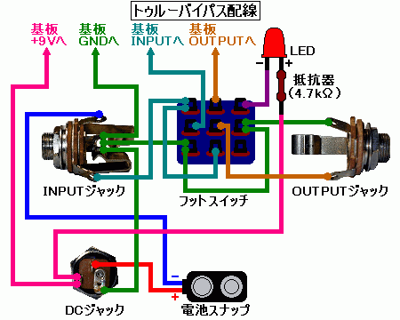

私のエフェクター自作方法【6】配線（ケース編）
2008年11月24日 カテゴリー：私のエフェクター自作方法
ケース内に配線をしていきます。
下の図は私がいつも行っている3PDTスイッチを使ってトゥルーバイパスとLED点灯をする場合の配線図です。たまに「スルー」バイパスと書いてある記事を見かけますが「トゥルー」バイパスが正しいみたいです。フォンジャックはスイッチクラフトのジャックの実写です（向きに注意してください）。

緑色の線がアース（=グラウンド=GND）になります。Ginga Dropsの「基板以外の配線図」ではダイオードが入れてありますが、私はいつも基板にダイオードを入れているので上の配線図にはダイオードはありません。スイッチへの配線も少し違いますが、上下左右が入れ替わっているところがあるだけで同じものです。抵抗はLEDのプラスとマイナスどちらにつけてもかまいません。抵抗の値については好みで変えて大丈夫です（値が小さいほど明るい）。また、「DCジャックを使用する場合はインプットジャックにプラグを挿していなくても常時電源オン」というふうにしたくなければ、DCジャックからのアース線を電池スナップからのマイナス線（青色）と同じところにつなぎます。
※インプットジャックとアウトプットジャックのアースが金属ケースによりつながれている場合、アウトプットジャックのアースの配線をしない方が良いようです。ただし金属以外のケースを使う場合や塗装済み金属ケースの場合、絶縁型のジャックを使う場合ではジャックのアースが接続されないことになります。このような場合に備える意味で私はアースをつなげるようにしています。
回路図も書いてみました（下図）。
＜私がいつもやっている順序＞
[1]基板とフットスイッチをケースに固定
[2]フットスイッチにインプットジャックとアウトプットジャックへの線材（各2本）をつける
[3]LEDに抵抗と線材を半田付け
[4]DCジャックにアース線、LEDの＋線、基板からの電源の線をつける
[5]フットスイッチに基板からの入力の線、出力の線をつける
[6]アウトプットジャックにフットスイッチからの線（2本）をつける
[7]インプットジャックに基板からのアース線、DCジャックからのアース線、およびフットスイッチからの線（2本）をつける
[8]LEDのアース線をフットスイッチにつける
[9]ジャック類をケースに固定
[10]電池スナップをつける
↓完了写真
線材を結束バンドで束ねなくても特に問題はないようです（ポットの配線が複雑なときには束ねます）。入力と出力の線が近いと発振の原因となることがあるらしいので、束ねるときは注意が必要です。また、コーラスなどでRATE（SPEED）ポットの配線が入力や出力に近いと、ノイズが出る可能性があります。
裏フタ取り付け前に、絶縁のため厚紙を切り取ったものを一応かぶせています。